Élements de base du langage R
Table des matières
Hans Ole Orka: I try to reproduce the SAS proc reg stepwise model selection procedure in R. Brian D. Ripley: But why? If you want 1950s statistical methods why not use a 1960s package? There are enough problems with stepwise selection (see e.g. the book by Frank Harrell and many postings here) even with a well-defined criterion like AIC, but that is better than an ad hoc algorithm, especially one based on forwards selection. — Hans Ole Orka and Brian D. Ripley, R-help (September 2007)
Structure de données R
R est un langage assez riche du point des structures de données que l’on peut manipuler. Voici les principales structures de données, par ordre croissant (de gauche à droite) de complexité et de généralisation, qui nous intéresseront dans le cadre de cette présentation des éléments du langage R :
Les vecteurs sont des collections d’éléments qui peuvent être utilisés pour représenter des variables statistiques (p. ex., des nombres représentant l’âge arrondi à l’entier d’un ensemble de personnes ayant accepté de répondre à une enquête de consommation). Les matrices correspondent à la représentation mathématique que l’on peut s’en faire : il s’agit d’une structure à deux dimensions où chaque cellule, représentant le croisement d’une ligne et d’une colonne, contient une valeur. Il existe des matrices à plus de deux dimensions (appelées array dans la terminologie R). Les data frames constituent une des originalités de R, reprise dans de nombreux autres langages (Python, Mathematica, Julia), et permettent de représenter des collections de valeurs de différents types (p. ex., la même série d’âges associées à la catégorie socio-professionnelle des répondants et leur tranche de revenus). Enfin, les listes constituent avec les vecteurs la seconde structure fondamentale de représentation des données sous R, et celles-ci ne se limitent pas à la représentation des variables au sens statistique du terme.
Vecteurs et nombres
L’élément de base est ce que l’on appelle un « vecteur » sous R : il s’agit essentiellement d’une structure permettant de collecter une liste d’éléments, voire un seul élément (un scalaire est malgré tout représenté comme un vecteur de taille 1 sous R). Les structures plus complexes schématisées plus haut reposent toutes sur un stockage de l’information sous forme de vecteurs. Il n’existe pas dans les packages de base de R de structures de données telles que les dictionnaires de Python ou les tables de hachage de Java.
Les éléments contenus dans un vecteur sont tous du même type, par exemple des nombres entiers ou réels, des caractères ou des chaînes de caractère, des valeurs booléennes. R effectue une distinction entre le type ou la classe d’un objet et son mode (de stockage) ; voir l’aide en ligne correspondante pour mode, class et typeof. On retiendra que les nombres sont de type numeric. Pour « forcer » la représentation d’un nombre entier sous forme d’entier (integer) on ajoute le suffixe L au nombre en question :
typeof(1) typeof(1L)
[1] "double" [1] "integer"
Les nombres entiers sont représentés sur 32 bits, ce qui donne la valeur suivante pour le plus grand entier représentable en machine (2^32/2 - 1) :
.Machine$integer.max
[1] 2147483647
Pour une précision sur 64 bits, il est nécessaire d’utiliser soit le package bit64 qui fournit la commande as.integer64, soit des libraries spécialisées telles que GMP ou MPFR pour lesquelles il existe des packages R. Les cas limites se rencontrent généralement dans le cas d’opérations sur les dates (2 147 483 647 jours permettent tout de même de réprésenter des écarts entre plusieurs centaines de décades) ou de calculs impliquant des nombres premiers ou des factorielles (là encore, il existe des alternatives numériques efficaces).
D’autres informations sont stockées dans la variable globale .Machine, en particulier. R dispose des symboles Inf et -Inf pour désigner des valeurs numériques dépassant la capacité de représentation machine. Le symbole NA (Not Available) est réservé pour désigner les valeurs manquantes alors que NaN (Not a Number) s’applique au cas des opérations numériques sur des nombres réels ou complexes qui ne sont pas définies sur le plan mathématique, typiquement \(\tfrac{0}{0}\) ou \(\tfrac{\infty}{\infty}\).
.Machine$double.xmax c(10^308, 10^309) 10^309/(10^309+1)
[1] 1.797693e+308 [1] 1e+308 Inf [1] NaN
Manipulation des vecteurs
Il est possible de créer des vecteurs de plusieurs manières, mais en règle générale la commande c permet de générer une liste de valeurs assez facilement, comme on vient de le voir dans l’illustration précédente. Les autres solutions impliquent d’utiliser, par exemple, vector ou numeric dans le cas de listes de nombres (entiers ou réels). Voici un exemple de vecteur constitué de la suite des 10 premiers nombres entiers :
x <- c(1, 2, 3, 4, 5, 6, 7, 8) print(x)
[1] 1 2 3 4 5 6 7 8
Comme on l’a déjà mentionné en introduction, il n’est pas nécessaire d’utiliser print pour afficher le contenu d’une variable, ici le vecteur appelé x, et l’on peut très bien taper simplement le nom de la variable à l’invite de commande R. Le nombre total d’éléments (incluant les éventuelles valeurs manquantes, NA) correspond à la longueur du vecteur que l’on obtient à l’aide de la commande length. Ces commandes de concaténation peuvent être imnbriquées les unes dans les autres, comme dans l’exemple suivant :
x <- c(c(1, 2, 3), c(4, 5, 6), 7, 8) x
[1] 1 2 3 4 5 6 7 8
Pour accéder aux éléments d’un vecteur, il suffit d’indiquer l’indice de l’élément, en se rappelant que le premier élément a pour indice 1 (et le dernier la valeur renvoyée par length). Voici un exemple, après avoir inversé l’ordre des éléments à l’aide de la commande rev, qui permet d’afficher le troisième élement contenu dans la nouvelle variable x :
x <- rev(c(1, 2, 3, 4, 5, 6, 7, 8)) x[3]
[1] 6
Il s’agit bien d’une nouvelle variable puisque le contenu de l’ancienne variable x a été remplacé par de nouvelles valeurs à l’aide de l’opérateur d’assignation <-. À noter que l’on peut également utiliser le signe égal comme symbole d’affectation (même s’il est préférable de se cantonner à l’usage du symbole classique) et que le symbole d’affectation en forme de flèche peut s’employer dans les deux directions :
rev(c(1, 2, 3, 4, 5, 6, 7, 8)) -> x y <- x y
[1] 8 7 6 5 4 3 2 1
Toujours avec le même exemple, on peut remplacer n’importe quelle valeur contenue dans un vecteur par le même principe d’extraction du i-eme élément. Ci-après, on remplace la troisième valeur par une valeur manquante :
x <- c(1, 2, 3, 4, 5, 6, 7, 8) x[3] <- NA x
[1] 1 2 NA 4 5 6 7 8
Traitement des valeurs manquantes
La présence de valeurs manquantes dans un vecteur peut se vérifier à l’aide de is.na. Cette commande renvoit les valeurs TRUE ou FALSE selon que la valeurs vaut NA ou non :
x <- c(1, 2, 3, 4, 5, 6, 7, 8) x[3] <- NA is.na(x)
[1] FALSE FALSE TRUE FALSE FALSE FALSE FALSE FALSE
Opérations arithmétiques usuelles
Un aspect intéressant des vecteurs R est que les opérations mathématiques usuelles (addition, multiplication, fonction trigonomoétriques, etc.) opèrent élément par élément. On parle de « calcul vectorisé » dans ce cas. En d’autres termes, si l’on souhaite augmenter toutes les valeurs contenues dans x d’une unité, on écrira :
x <- c(1, 2, 3, 4, 5, 6, 7, 8) x + 1
[1] 2 3 4 5 6 7 8 9
De nombreuses commandes R permettent d’effectuer des opérations arithmétiques du même type à partir de vecteur. En voici quelques exemples avec les commandes sum et cumsum :
x <- c(1, 2, 3, 4, 5, 6, 7, 8) sum(x) cumsum(x)
[1] 36 [1] 1 3 6 10 15 21 28 36
On dispose donc à présent d’une façon simple de compter les valeurs manquantes : sum(is.na(x)) renverra en effet le nombre de valeurs manquantes puisque les booléens TRUE ou FALSE prennent respectivement les valeurs 1 et 0.
x <- c(1, NA, 3, 4, NA, NA, 7, 8) sum(is.na(x))
[1] 3
Si l’on souhaite connaître les indices des éléments valant NA, on utilisera la commande which :
x <- c(1, NA, 3, 4, NA, NA, 7, 8) which(is.na(x))
[1] 2 5 6
Quant aux calculs vectoriels, il est nécessaire d’encadrer les opérateurs arithmétiques par le symbole %. Si \(X=(1,2,3)\), \(X^TX=1 + 2^2 + 3^2=14\). Considérons le produit vectoriel : si \(X\) est un vecteur ligne, alors \(X^T\) désigne le vecteur \(X\) transposé, soit un vecteur colonne constitué des mêmes éléments. Le produit \(X^TX\) se retrouve dans le calcul de l’écart-type. L’opération de multiplication réalisée à l’aide de l’opérateur * correspondrait à une multiplication élément par élément dans le cas de deux vecteurs de même longueur. Avec l’opérateur %*%, on obtient le produit vectoriel :
X <- c(1, 2, 3, 4, 5, 6, 7, 8) as.numeric(t(x) %*% x)
L’usage de as.numeric ci-dessus permet de forcer l’affichage du résultat sous forme de nombre (au lieu d’une matrice à une ligne et une colonne).
Data frames
Propriétés des data frame
L’une des structures de données les plus riches sous R pour représenter des données statistiques est le data frame. Il s’agit d’une collection de listes de valeurs (techniquement, des vecteurs) arrangées en colonne. Une particularité est que les variables arrangées en colonnes peuvent être de différents types, par exemple des variables numériques et des facteurs. Cette structure de données permet d’une certaine manière de rendre explicite l’association conceptuelle entre plusieurs variables statistiques. À l’image d’une table dans une base de données, des informations de différentes nature collectées sur le même ensemble d’unités sttaitsiques sont regroupées ensemble dans un même tableau.
Les objets de type data frame sont essentiels pour les représentations graphiques et la modélisation, grâce en partie à la possibilité de représenter implicitement les niveaux des variables catégorielles. Les commandes permettant d’importer des sources de données externes offrent généralement la possibilité de représenter les données sous forme de data frame. C’est le cas, par exemple, des commandes read.table, read.csv (ou l’équivalent dans le package readr, read_csv).
Voici un exemple de data frame disponible dans le package datasets de R :
data(ToothGrowth) head(ToothGrowth)
len supp dose 1 4.2 VC 0.5 2 11.5 VC 0.5 3 7.3 VC 0.5 4 5.8 VC 0.5 5 6.4 VC 0.5 6 10.0 VC 0.5
Comme on peut le voir, l’affichage des premières valeurs du tableau à l’aide de la commande head suggère que ces trois variables ne sont pas toutes du même type. En particulier, la variable supp est un facteur, ce que l’on peut confirmer en affichant la structure de ce data frame :
str(ToothGrowth)
'data.frame': 60 obs. of 3 variables: $ len : num 4.2 11.5 7.3 5.8 6.4 10 11.2 11.2 5.2 7 ... $ supp: Factor w/ 2 levels "OJ","VC": 2 2 2 2 2 2 2 2 2 2 ... $ dose: num 0.5 0.5 0.5 0.5 0.5 0.5 0.5 0.5 0.5 0.5 ...
Il s’agit de données collectées dans une étude sur la longueur des odontoblastes chez des cochons d’inde soumis à deux types de traitement (supp) selon différents dosages (dose).
Il est possible d’accéder aux valeurs contenues dans un tableau de type data frame en travaillant à partir des variables (colonnes) ou des lignes (observations). EN utilisant la « notation matricielle », on désignera le ou les numéros de ligne (i) suivi du ou des numéros de colonne (j) : ToothGrowth[i,j]. Voici un exemple de sélection de la valeur située en ligne 2 et colonne 1 :
ToothGrowth[2,1]
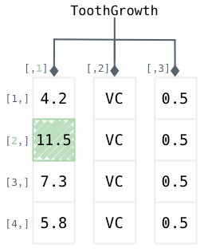
Lorsque l’on ne spécifie aucun indice pour les lignes ou les colonnes, toutes les valeurs sont renvoyées :
ToothGrowth[2,]
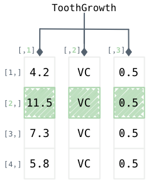
Au lieu des numéros de ligne/colonne, il est également possible, et souvent plus commode, de sélectionner les variables à l’aide de leur nom. D’ailleurs, on pourrait garder la notation entre crochets et remplacer le numéro de colonne par le nom de la variable (entre quotes) correspondante, par exemple :
ToothGrowth[2,"len"]
Mais comme les data frames héritent des propriétés plus générales des listes, on peut simplement préfixer le nom de la variable d’intérêt par le nom du data frame suivi du symbole $ comme suit :
ToothGrowth$len[2]
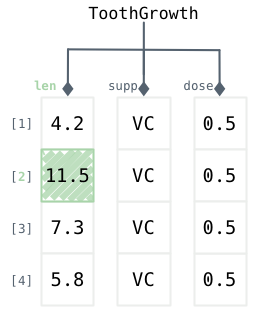
Parmi les caractéristiques particulières des data frames, on mentionnera la présence de row names qui permettent d’identifier de manière unique les lignes du tableau. La commande rownames permet d’extraire les identifiants de ligne (par défaut, des entiers consécutifs démarrant à 1 et représentés comme des caractères) tandis que colnames, ou dans le cas des data frames, names revoit le nom des colonnes, c’est-à-dire les variables. Enfin, en tant que tableau rectangulaire, les data frames ont des dimensions, nrow et ncol, que l’on peut résumer à l’aide de la commande dim :
dim(ToothGrowth) names(ToothGrowth)
[1] 60 3 [1] "len" "supp" "dose"
Sélection et indexation dans un data frame
Il existe plusieurs manières de sélectionner des ensembles de valeurs dans un data frame. On peut tout à fait utiliser les indices des lignes et des colonnes (voire même les row names et les noms des variables) pour extraire des plages de valeurs, comme on l’a vu plus haut. Un vecteur d’indices tel que c(2,4) permettra, par exemple, de sélectionner certaines des valeurs d’une variable à partir de leur position :
ToothGrowth$len[c(2,4)]
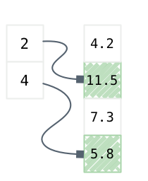
Et voici un exemple de sélection des valeurs d’une variable (supp) selon les valeurs prises par une autre variable (len > 6) :
ToothGrowth$supp[ToothGrowth$len > 6]
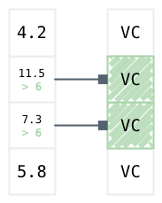
R permet de combiner les filtres de sélection à l’aide d’opérateurs logiques : & pour la conjonction (« et » logique) et | pour la disjonction (« ou » logique) ; l’égalité logique est représentée par un double signe égal tandis que la négation logique s’écrit !=. Ceci permet de combiner plusieurs expressions et d’avoir des critères de sélection plus riches :
ToothGrowth[,ToothGrowth$len > 10 & ToothGrowth$dose < 1]
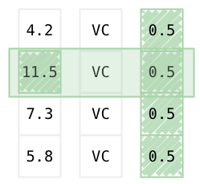
On notera que, contrairement à la sélection à base d’indices de ligne, la sélection sur critère (ou filtres) permet de s’affranchir de l’ordre des lignes en quelque sorte. Il est important de garder cette idée en tête même si, contrairement à Stata, les opérations de tri sont implicites sous R (p. ex., dans le cas de procédures d’aggrégation), c’est-à-dire que R ne modifie pas l’ordre des lignes d’un tableau à moins que l’utilisateur le demande explicitement. En revanche, du fait de la nécessité de préfixer le nom des variables par le nom du data frame, la notation ci-dessus devient très vite assez lourde.
Pour remédier à cela, on peut utiliser la commande subset dont la syntaxe est relativement simple : on indique le data frame sur lequel on souhaite travailler et dans lequel se trouve les variables d’intérêt, comment sélectionner les lignes et comment sélectionner les colonnes. Ceci revient à effectuer une opération de sélection (des lignes) et de projection (des colonnes) en langage SQL :
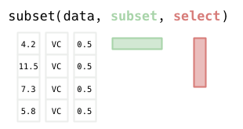
Si l’on souhaite renvoyer le contenu de la variable dose pour les seules observations qui vérifient la condition len > 8, voici donc ce que l’on écrirait :
subset(ToothGrowth, len > 8, dose)
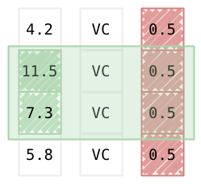
Matrices
Une autre structure assez utile est donnée par les objets de type matrix. Comme dans le cas des data frames, il s’agit d’une structure rectangulaire (ligne x colonne) mais constituée uniquement d’éléments du même type. Contrairement à un data frame on ne peut pas représenter des variables de type facteur.
Le produit de deux matrices, sous réserve de conformité du produit
Générateurs de séquences
Séquences régulières de nombre
La capacité de générer des séquences de nombres (entiers ou non) selon un motif régulier ou de manière aléatoire se révèle utile dans les cas où l’on souhaite accéder aux éléments d’un vecteur via une liste de valeurs pré-spécifiée ou pour construire des listes de randomisation, par exemple.
La commande seq permet de générer une séquence régulière de nombres, en indiquant la valeur de départ (from=) et la valeur d’arrivée (to=), et éventuellement le pas de décalage (by=). L’argument
seq(1, 8)
[1] 1 2 3 4 5 6 7 8
Pour ce genre de séquence de nombres entiers consécutils, on peut également utiliser la notation 1:8. En revanche, il est possible de générer des motifs réguliers plus complexes avec seq, comme par exemple des nombres espacés régulièrement ou des suites de nombres non entiers. En voici deux illustrations :
seq(1, 20, by = 2)
[1] 1 3 5 7 9 11 13 15 17 19
x <- seq(1, 800, length.out = 15) round(x, 2)
[1] 1.00 58.07 115.14 172.21 229.29 286.36 343.43 400.50 457.57 514.64 [11] 571.71 628.79 685.86 742.93 800.00
Séquences de symboles avec motifs
La commande rep permet de construire des séquences d’éléments avec répétition. Considérons la séquence AB, que l’on peut représenter à l’aide du vecteur de caractères c("A", "B"). Une telle séquence peut représenter les groupes de traitement dans lesquels les unités statistiques doivent être allouées. On souhaite utiliser ce motif pour générer des séquences régulières de type AABB, ABAB. Voici un exemple d’utilisation :
rep(c("A", "B"), 2)
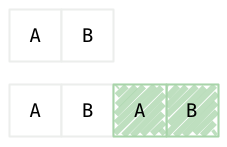
rep(c("A", "B"), c(2, 2))
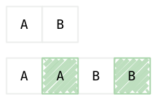
Cette dernière formulation est équivalente à rep(c("A", "B"), each=2) puisque le nombre d’éléments à générer est le même pour chaque motif. La commande rep fonctionne de la même manière avec des nombres, des caractères ou les niveaux d’un facteur.
Séquences de niveaux de facteurs
Dans le cas d’un plan d’expérience, il est souvent utile de pouvoir générer des séquences de codes numériques ou de niveaux d’un facteur.
gl(2, k = 2, len = 4, labels = c("A", "B"))
[1] A A B B Levels: A B
Combinaisons et permutations
x <- 1:8 sample(x)
[1] 6 2 5 8 4 7 3 1
Une combinaison désigne un réarrangement de \(k\) éléments pris parmi \(n\). On note \({n \choose k}\) le nombre total de combinaisons possibles, que l’on appelle également coefficient binomial, et on montre que cette quantité vaut : \[{n \choose k} = \frac{n(n-1)\dots(n-k+1)}{k(k-1)\dots 1}=\frac{n!}{(n-k)!k!}.\]
Sous R, les commandes choose et combn renvoient, respectivement, le nombre total de combinaisons et la liste des combinaisons (arrangées en colonnes). Attention, cette dernière commande n’est pas très efficace dans le cas des grands ensembles. Voici une illustration :
choose(3, 2) combn(1:3, 2)
[1] 3
[,1] [,2] [,3]
[1,] 1 1 2
[2,] 2 3 3
Nombres aléatoires
set.seed(101) x <- rnorm(1000) quantile(x)
0% 25% 50% 75% 100%
-3.1772097 -0.6917647 -0.0543911 0.5854619 3.1784893
En anticipant sur le chapitre suivant qui discute des distributions de probabilités et des estimateurs, et sans se préoccuper des aspects graphiques spécifiques du package ggplot2, voici une application simple des commandes vues jusqu’à présent :
library(ggplot2)
library(hrbrthemes)
set.seed(101)
f <- function(n) mean(rbinom(n, size = 1, prob = .5))
n10 <- seq(10, 10000, by = 10)
n100 <- seq(10, 10000, by = 100)
r10 <- sapply(n10, f)
r100 <- sapply(n100, f)
fmt.num <- scales::format_format(big.mark = " ", scientific = FALSE)
fmt.pct <- function(x) paste(x * 100, "%")
p <- ggplot(mapping = aes(x = n10, y = r10)) +
geom_line(col = grey(.7)) +
geom_line(aes(x = n100, y = r100), col = grey(.3), size =.8) +
scale_y_continuous(labels = fmt.pct) +
scale_x_continuous(labels = fmt.num, breaks = seq(0, 10000, by =2000)) +
labs(x = "Nombre de lancers", y = "Fréquence de l'événement “Face”") +
theme_ipsum(grid = "X", base_family = "Droid Sans", base_size = 11)
ggsave("fig-01-binom-draws.png", width = 6, height = 4)
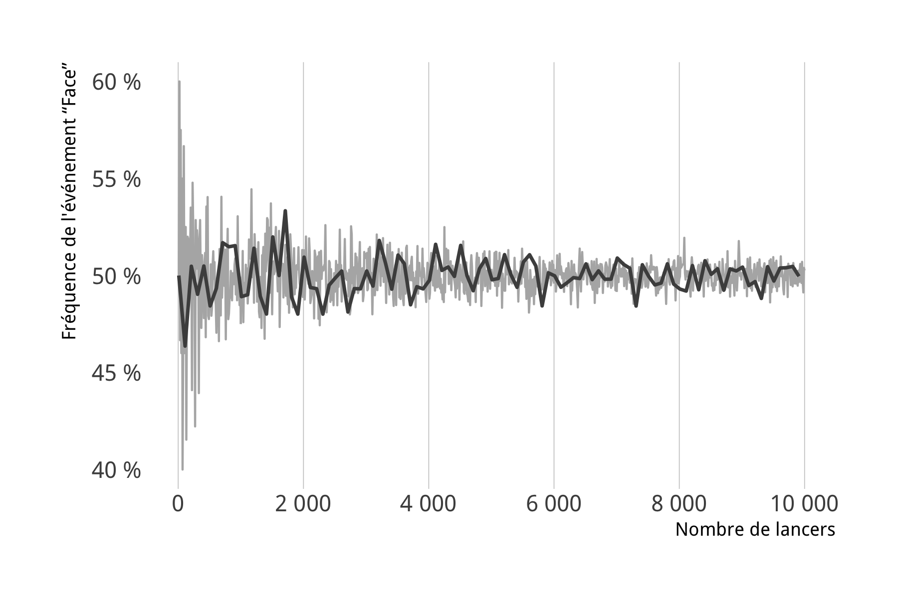
Figure 13 : Légende
Exercices d’application
Voici une série de petits exercices, de complexité variable, pour mettre en application les concepts présentés dans ce chapitre. Dans la plupart des cas, il sera nécessaire de consulter l’aide en ligne pour la description des jeux de données.
Les solutions sont proposées sous forme de notebook Jupyter mais il est tout à fait possible de travailler avec RStudio ou la console R directement.
- Avec le jeu de données birthwt du package MASS, calculer (a) l’âge moyen des mères ayant des antécédents d’hypertension et un poids supérieur à 55 kg, (b) le nombre de cas ayant un poids inférieur à la norme pour lequels la mère est âgée de plus de 30 ans et fumait pendant le premier trimestre de grossesse.
- Avec le jeu de données mtcars